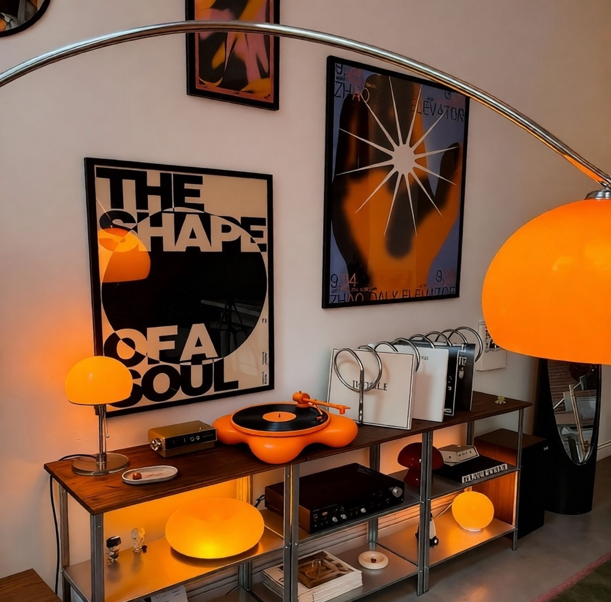
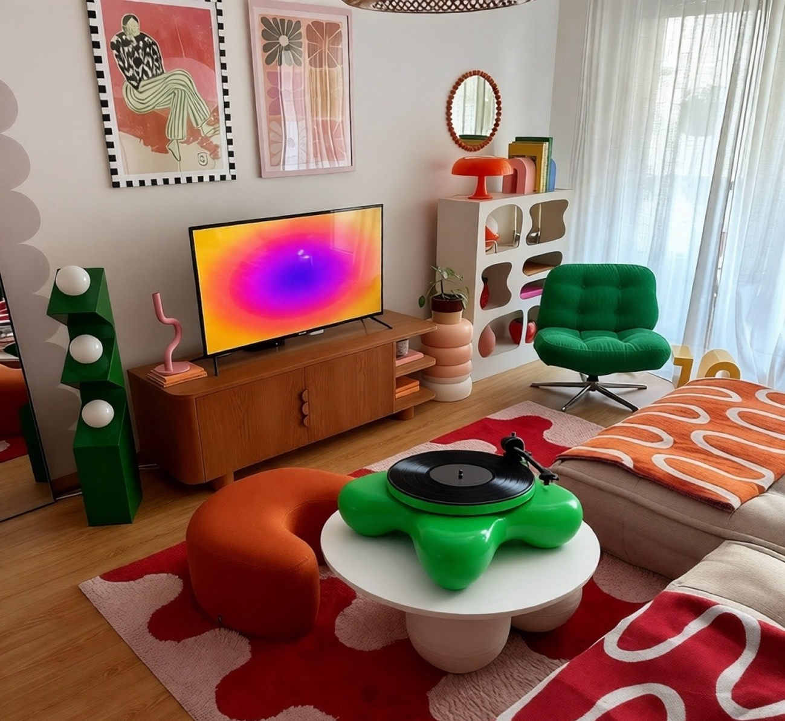
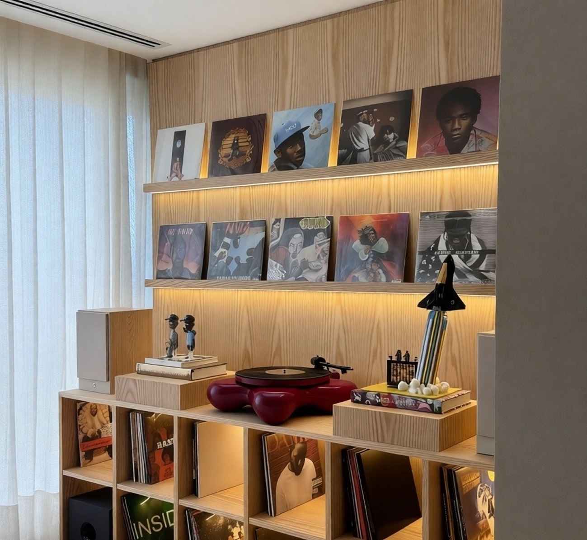

Современные виниловые проигрыватели бывают самых разных цветов, но мало кто
догадывается, что цвет может
влиять на наше настроение и поведение.
Внешний вид винилового проигрывателя это нечто большее, чем просто красивая глянцевая оболочка в
интерьере, потому что даже дизайн влияет на то, как мы воспринимаем музыку. В статье расскажем, как
выбор оттенка меняет наше настроение во время прослушивания и обсудим все нюансы возвращения виниловых
проигрывателей в моду через призму психологии цвета.

Цветовая гамма виниловых проигрывателей влияет на восприятие музыки с точки зрения психологии. Сам цвет
не меняет свойства звука, но он формирует эмоциональные ассоциации.
Психологически чёрный цвет часто воспринимается как нейтральный, классический и универсальный. Он создаст
ощущение надёжности и традиционности. Подойдет для тех, кто ценит стабильность и простоту. Ты слушаешь
андеграунд, хэви-метал или классику, любишь черно-белые фотографии? Черный проигрыватель
винила добавит
в интерьер элегантности и готики.
Красный цвет в психологии часто связывают с энергией, страстью, динамикой и силой. Виниловые
проигрыватели красного цвета могут подсознательно настраивать слушателя на более
эмоциональную музыку.
Такой выбор может подойти для поклонников рок-музыки, поп-хитов или других жанров, которые требуют
эмоционального переживания. Также красный цвет может стимулировать нервную систему и повышать уровень
адреналина, что усиливает представление о ритмичных и мощных композициях.
Этот цвет часто ассоциируется с благородством, роскошью и достатком. Бордовые
проигрыватели создают
атмосферу для прослушивания классической музыки, джаза или акустических композиций. Дополнением к
альбому Maroon 5 - «Songs About Jane» станет проигрыватель цвета бордо.
Белый цвет символизирует технологичность, чистоту звучания и универсальность. Он визуально «облегчает»
пространство и создаёт ощущение свежести. Белый проигрыватель хорошо впишется в
скандинавский стиль,
минимализм или модерн, особенно в светлых помещениях.
Оранжевый цвет дарит яркие воспоминания и формирует особое настроение при прослушивании музыки. Этот цвет
сочетает энергию красного и жизнерадостность жёлтого, вызывая ассоциации с теплом, творчеством и
дружелюбием. Психологически оранжевый повышает настроение, стимулирует активность и вовлечённость,
снижает уровень стресса и настраивает на лёгкое восприятие музыки.
Теперь разберёмся, как выбрать цвет проигрывателя по вайбу, чтобы при этом он клево вписался в интерьер.

